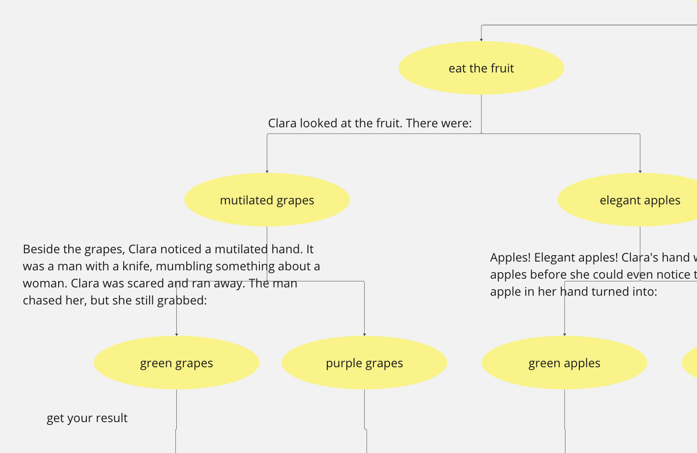

Project 2: AI Chatbox
Week 1: UI explorations
Based on the first week's class, I continued to explore some possibilities generated by the interface built with buttons. I built an interactive storytelling game where one can have some options after reading a clip of a story.
To trigger another two buttons after one option has been selected, I created new classes to hold the new UIs and added them into the response of the previous ones

This is what it returned:

By keep adding layers of the story and the choices, the interaction process was expanded. Interestingly, some of the storylines were automatically generated by replit, similar to how it autofills the code. I kept some of the story although sometimes it made the story with no sense, but it is fun.
Week 2-3: restructuring the code

Key decisions you are making and your thinking behind them & Any changes in the intent or the substance of the bot:
After trying with using pure UI interaction coded by individual Classes, the example we learned in the second class really solved my problem. As in the first week, after writing the storyline of after the selection of 'fruit' with Classes, it was exshausted for me to do everything again for the 'water' choice. And the tree diagram with the structure of Nodes offered the opportunity to solve the situation. Therefore, in my following development stages, the presentation of the bot would not be changed a lot, but I would be working on the structure of the code.
Errors and mishaps - how did you resolve them, or how did you avoid them:
The most challenging part for me is drawing the diagram. As the concept of nodes and roots are new to me, it took time for me to understand the logic behind the mateiral offered in class. At first, I created a diagram based on my own understanding, which turned out to be totally wrong:
The relationship between the nodes and the answers are tricky to me. After turned to the diagram offered in class, I reorganized the structure of the diagram and also rewrite the code in a more efficient way.
Key successes along the way:
Although by then end of the day, the visual and what can be found in Discord did not have much difference from the first version of my bot, the logic tree structure helped me improve the structure of my code. Not much changed needed to be made in code except for the node definition part, and modifications can be easily made once the structure is confirmed.